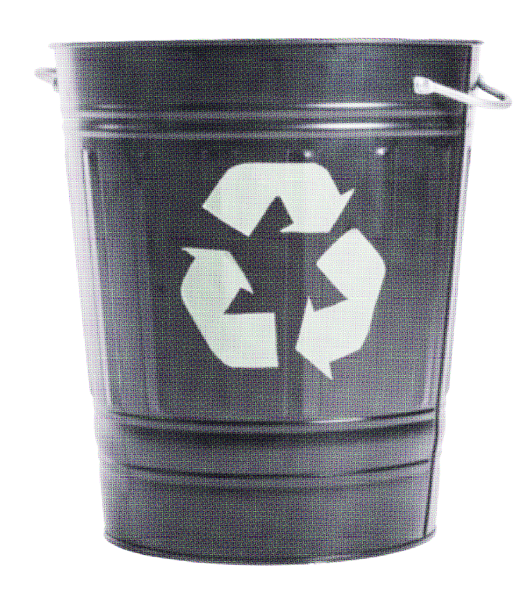
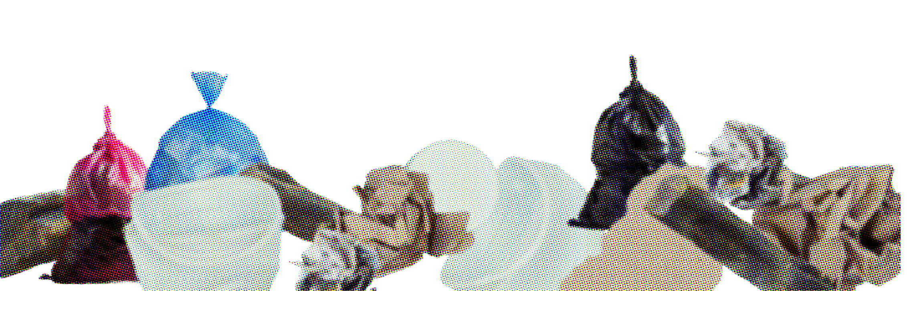
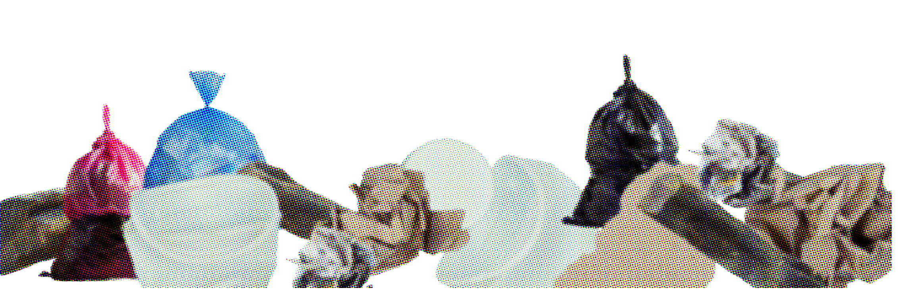

환경부령이 정하는 사업장 폐기물 배출자는 사업장 폐기물의 종류와 발생량 등을 환경부령에 따라 시장·군수·구청장에게 신고해야 합니다. 이를 통해 일반 사업장 폐기물에 대한 신고 제도가 확립되었습니다.
지정 폐기물의 처리 증명제는 배출자, 운반자, 처리자가 처리 단계별로 적법 처리를 입증하도록 의무화한 제도입니다. 이 제도는 지정 폐기물의 불법 투기와 불법 처리를 예방하기 위해, 배출 단계부터 최종 처리 단계까지의 처리 경로와 적법 처리 여부를 추적·감시합니다.
따라서 지정 폐기물의 처리 증명제는 기존 폐기물 추적 제도보다 강화된 제도로 볼 수 있습니다.
환경부령이 정하는 사업장 폐기물 배출자는 사업장 폐기물의 종류와 발생량 등을 환경부령에 따라 시장·군수·구청장에게 신고해야 합니다. 이를 통해 일반 사업장 폐기물에 대한 신고 제도가 확립되었습니다.
지정 폐기물의 처리 증명제는 배출자, 운반자, 처리자가 처리 단계별로 적법 처리를 입증하도록 의무화한 제도입니다. 이 제도는 지정 폐기물의 불법 투기와 불법 처리를 예방하기 위해, 배출 단계부터 최종 처리 단계까지의 처리 경로와 적법 처리 여부를 추적·감시합니다.
따라서 지정 폐기물의 처리 증명제는 기존 폐기물 추적 제도보다 강화된 제도로 볼 수 있습니다.
환경부령이 정하는 사업장 폐기물 배출자는 사업장 폐기물의 종류와 발생량 등을 환경부령에 따라 시장·군수·구청장에게 신고해야 합니다. 이를 통해 일반 사업장 폐기물에 대한 신고 제도가 확립되었습니다.
지정 폐기물의 처리 증명제는 배출자, 운반자, 처리자가 처리 단계별로 적법 처리를 입증하도록 의무화한 제도입니다. 이 제도는 지정 폐기물의 불법 투기와 불법 처리를 예방하기 위해, 배출 단계부터 최종 처리 단계까지의 처리 경로와 적법 처리 여부를 추적·감시합니다.
따라서 지정 폐기물의 처리 증명제는 기존 폐기물 추적 제도보다 강화된 제도로 볼 수 있습니다.
Score: 0

디자인은 끝이 아니라
새로운 순환의 시작이며,
아름다움은 지속 가능성과
책임에서 나옵니다.

 
